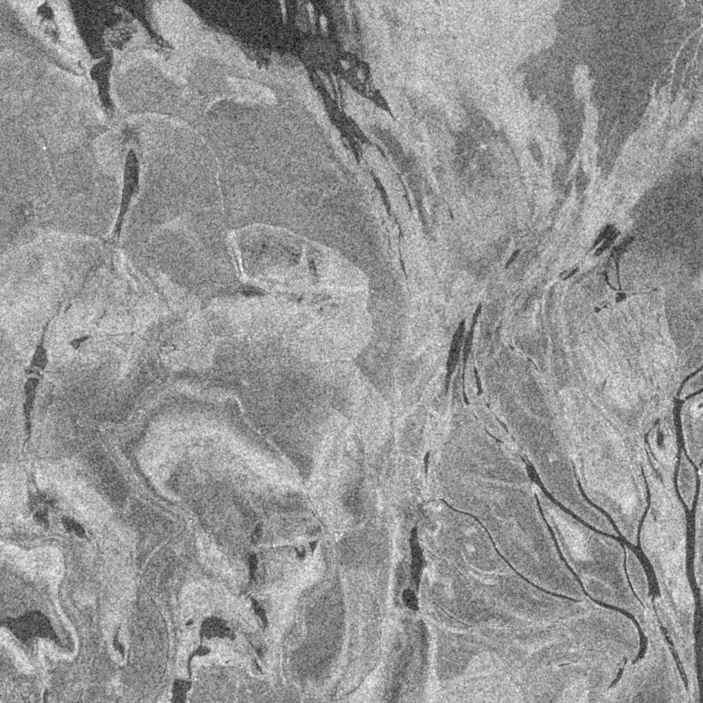
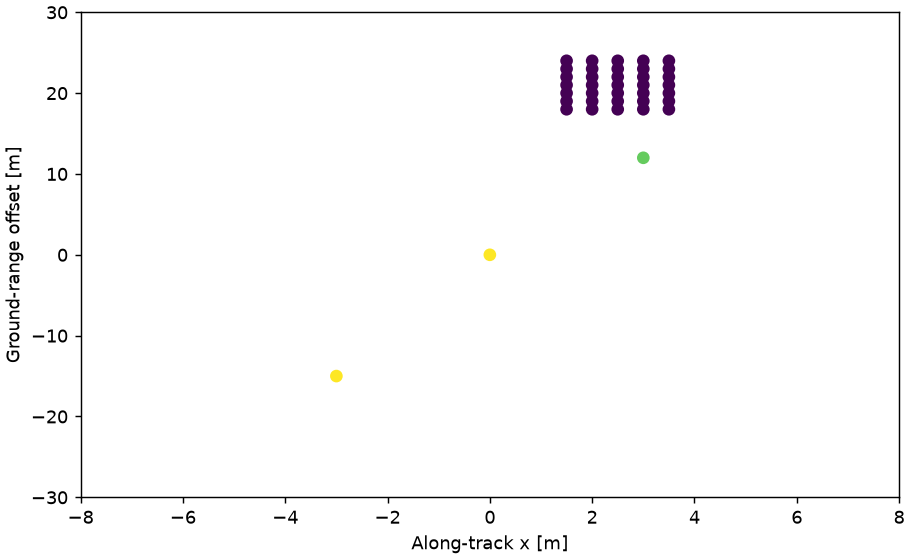
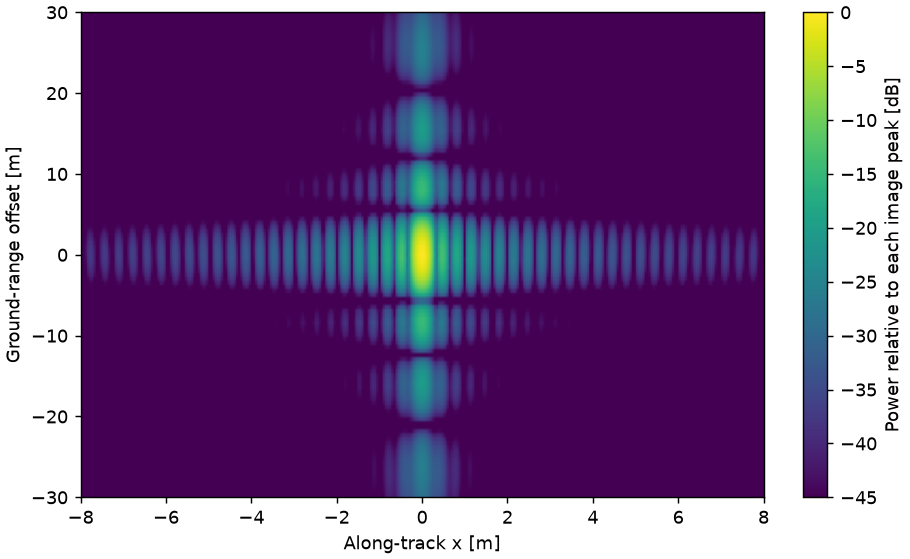
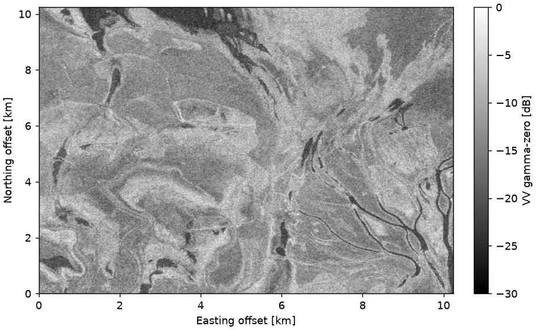
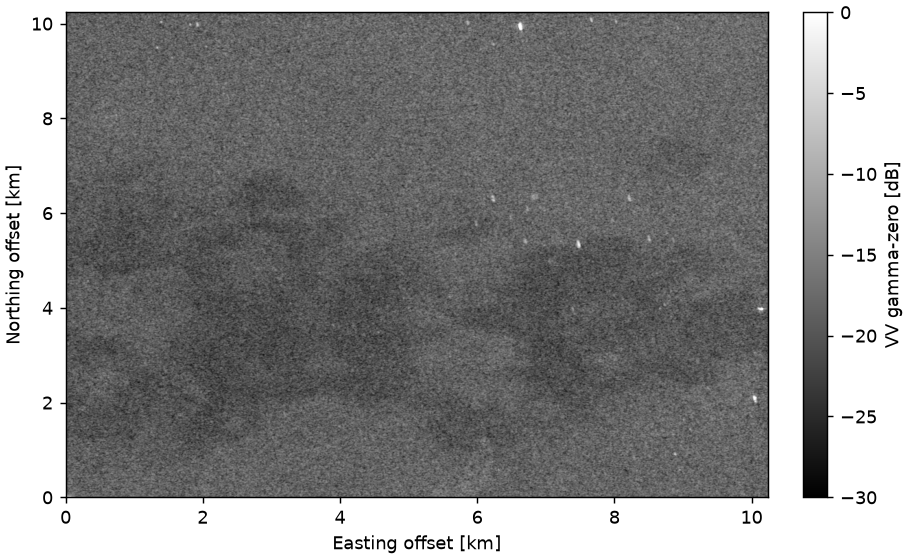
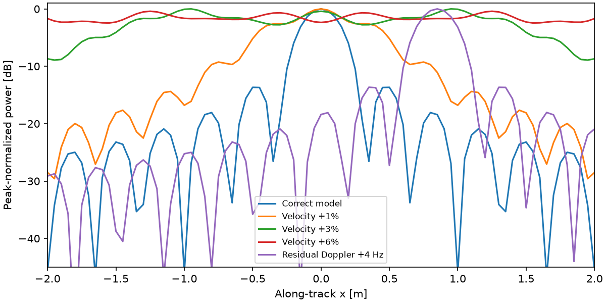

A reproducible radar research instrument
Earth, seen
through echoes.
From Radar Echoes to Earth Intelligence.
Form an image. Diagnose its failures. Read a changing landscape.

Light tells one story.
Phase tells another.
Radar transmits its own illumination. A sequence of complex echoes preserves the delays and phase history needed to resolve a scene.
This observatory connects that signal chain to an engineering question: can a sharp-looking image still fail a product-quality check?
Read the scoped research question ↗Geometry makes the image.
Move the incidence angle to see how the same slant-range resolution projects onto flat ground.
- Slant-range width
- 3.32 m
- Ground-range width
- 4.70 m
At B = 40 MHz, half-power width ≈ 0.886 c / (2B). Ground width divides by sin θ.
Sampling and resolution
Pixel spacing is not resolution. The laboratory samples fast time at 160 MHz and slow time at 800 Hz. Both exceed the supported chirp and Doppler sampling requirements. A finite 64 m aperture gives a nominal azimuth width of about 0.294 m; this is an airborne educational configuration, not a StriX specification.
Synthetic coherent imaging
A signal becomes a scene.
Follow delayed chirps through range compression and geometric phase compensation. Every displayed experiment is generated by the Python source.

Inspect the image-formation mathematics
Echo models(η,t) = Σ aⱼ p(t − 2Rⱼ(η)/c) exp(−i4πRⱼ(η)/λ)
The delayed linear chirp carries the two-way carrier phase. Stop-and-go, flat terrain and constant velocity are explicit assumptions.
BackprojectionI(x,y) = (1/N) Σ sᶜ(η,2R/c) exp(+i4πR/λ)
Interpolate complex compressed echoes at each pixel’s predicted delay, then sum coherently. Equations, functions and tests ↗
A sharp peak can be wrong.
Introduce an error. Compare the impulse response with its acceptance checks. Width alone misses displacement.
Precomputed Python experiments. One factor changes per case; selecting a case does not run a processor in your browser.

Quality gates, uncertainty and performance
Half-power widths use linear interpolation in power. PSLR is the strongest sidelobe power relative to the peak; ISLR compares summed sidelobe energy to mainlobe energy. First local minima delimit the mainlobe. Noise can destabilize these minima. Profile spacing is 0.05 m in azimuth and 0.5 m on ground; conservative crossing discretization allowances are twice these spacings.
Educational gates require width ≤ 1.25 times the analytic expectation and localization error ≤ 0.35 m. They are selected design thresholds, not a vendor specification. Runtime covers compression and focusing. Peak RSS is sampled every 10 ms and may miss short allocations. Full numerical evidence ↗
Reject bad data before imaging.
The pipeline validates finite complex I/Q before compression.
Real Sentinel-1 intensity
The lake changes. So does the threshold.
A 10.24 km square of Poyang Lake, observed from the same platform and orbit. Compare a fixed water-candidate threshold with Otsu.
North up. UTM zone 50N, 10 m pixels. Same grid; source RTC supplied by Catalyst.


Method choice changes the conclusion.
Loading measured results…
Try a live threshold on the display grid
This bounded browser calculation uses 4 × 4 linear-power means (40 m display pixels). Published results above use the original 10 m crop. Thresholding after averaging is a different estimator.
Move the control to load the display data and calculate candidate extent.
Candidate water is not confirmed flooding. Calm water can be dark, but wind, wet soil, vegetation, shadow and incidence geometry complicate intensity classification. No contemporaneous independent pixel labels are supplied; no accuracy score is claimed.
NASA documents the broader 2020 high-water context. Its different dates and optical observations do not validate this crop. Contains modified Copernicus Sentinel data 2019 and 2020, Catalyst RTC via Microsoft Planetary Computer (collection CC BY 4.0). Processing history, acquisitions and limitations ↗
Evidence you can take apart.
The instrument is small enough to understand, and explicit enough to challenge.
Research report ↗
Methods, generated results, negative findings and limits.
